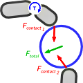
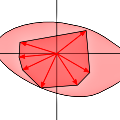
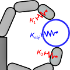

{kind=link}
Romain Michalec
These pages are an overview of the work I did as a Ph.D. student in the Interactive Simulation Laboratory of the Atomic Energy Commission in France. The focus of this work is the control of multifingered dextrous manipulation in humanoid robotics. It was defended in December 2011.
Modeling and Control of Multifingered Dextrous Manipulation for Humanoid Robot Hands
In robotics, when the demand for dexterity and versatility is high, traditional end effectors show their limits and humanoid robot hands seem an appealing alternative. Unfortunately, using such hands remains problematic, because their control is difficult.
My Ph.D. thesis is about three problems related to the control of humanoid robot hands: controlling the motion of the grasped object and the forces it is subject to, keeping hold of it in case of external disturbances, and modeling the elastic behavior of the grasp, that is to say its stiffness.
 Control To manipulate the object, we propose a control scheme where the contact forces are not broken into a pseudo-inverse solution and internal forces, thereby avoiding the shortfalls associated with this classical decomposition. This new control scheme, based on mathematical programming, includes all necessary setpoints and constraints in its formulation. [Paper] [Summary]
 Disturbances To keep hold of the object when external disturbances are expected, it is common to squeeze the object more than necessary, in anticipation of the disturbances. Yet not all disturbances can be withstood: there are limits on how robust a given grasp can be. We propose a method to quantify the maximal robustness of a grasp, and find corresponding tightening forces. [Paper] [Summary]
 Stiffness The fingers of a robot hand have a certain stiffness, characteristic of their elastic behavior. These stiffnesses induce an elastic behavior of the object, characterized by a certain stiffness too. We provide an expression of the object stiffness: it is a function of the finger stiffnesses, the contact forces, and the curvatures of the contacting surfaces. [Paper] [Summary]